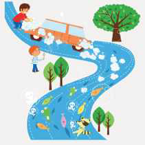
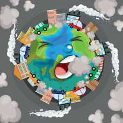
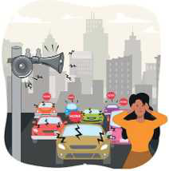

TEMATIKA 5: MJEDISI DHE SHËNDETI2. Zhurmë dhe pluhur në punëtorinë e xhaxhi Burimit
Puno në klasë
Ndihmë: si të punoj?
Shkruaj përgjigjen tënde. Mund ta thuash edhe me zë ose t’ia tregosh dikujt që shkruan për ty. Kur të mbarosh, shtyp butonin “Dërgo”.
1.
Shiko figurat më poshtë. Çfarë tregojnë ato?

a) ujë i ndotur
b) ajër i ndotur

c) tokë e ndotur

ç) zhurma